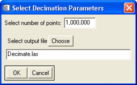

Using "Decimate LAS File(s)"
This tool is meant to decimate one or more LAS files.

Usage:
- Select the input file(s) to decimate.
- Input the desired number of points in the output file.
- Select the output file. If multiple input files are selected, they will be combined into a single output file with the desired number of points. The number of points contributed by each input file is proportional to the individual sizes of the input files.
Back to LidarTools home page.
Notes:
- This tool requires data that are in the LAS format.
Comments?
• Idaho State University • Boise Center Aerospace Laboratory • 322 E. Front Street #240 • Boise, Idaho • 83702 •